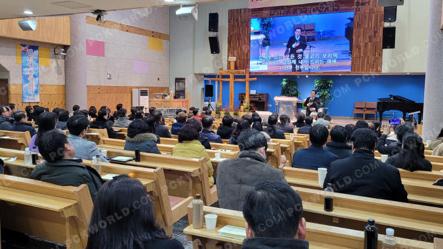
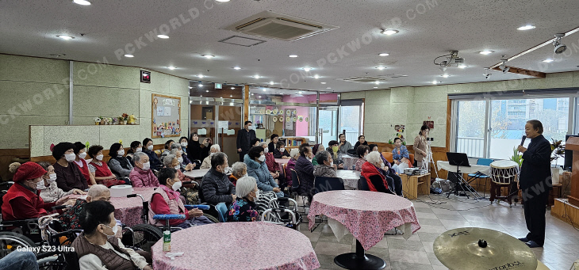

장애인협동조합 카페
장애 청년들에게 일자리를 제공하는 협동조합 카페를 무상으로 임대합니다. 누구나 편하게 들를 수 있는 동네 카페로 운영됩니다.

교회소개
정다운교회는 대한예수교장로회(통합)교단에 속해 있으며 1971년 9월 서울대 앞 신림동(일명 고시촌)에서 개척 설립되어 지역사회를 섬기며 특히 고시 청년선교에 힘쓰다가 2011년 11월 안양시 석수동에 교회를 신축 이전 한 후 교육, 복지, 문화사역을 중심으로 지역과 함께 하며 예수 그리스도의 사랑과 섬김을 실천하고 있습니다.

담임목사
정다운교회
담임목사 인사말
정다운교회에 오신 것을
진심으로 환영합니다.
"정다운교회"는 이름 그대로 정이 넘치고 따뜻한 공동체를 꿈꾸는 교회입니다. 1971년 서울대 앞 신림동에서 청년들의 선교를 위해 시작된 이 교회는, 반세기가 넘는 시간 동안 하나님의 은혜 안에서 자라왔습니다.
2011년 안양시 석수동으로 이전한 후에도 교육·복지·문화라는 3대 핵심 비전을 붙들고, 지역 사회와 함께 주님의 뜻을 이루어 가고 있습니다.
교회 문은 언제나 열려 있습니다. 언제든 찾아오셔서 함께 예배드리고, 말씀 나누며, 서로 격려하는 아름다운 공동체를 만들어 가요.
정다운교회 담임목사 이종운 드림
핵심가치
모든 세대가 말씀 위에 세워져 하나님의 사람으로 자라가도록 돕습니다.
교육·복지·문화사역을 통해 교회가 속한 지역과 함께 성장합니다.
복음이 필요한 곳이라면 어디든 — 지역과 열방을 향한 선교에 헌신합니다.
지역주민들은
— 이종운 담임목사
변장한 천사입니다.
지역사역
1971년 신림동에서 시작한 청년선교의 정신은, 2011년 안양 이전 후 4층 건물 전체를 지역사회로 내어주는 사역으로 이어졌습니다.
장애 청년들에게 일자리를 제공하는 협동조합 카페를 무상으로 임대합니다. 누구나 편하게 들를 수 있는 동네 카페로 운영됩니다.
학교 적응에 어려움을 겪는 학생들을 위한 위탁 교육 기관이 함께합니다. 또 한 번의 기회를 만들어주는 공간입니다.
24명의 어린이가 방과후 돌봄을 받으며 악기교실·영어회화 등 다양한 활동에 참여합니다.
어르신들의 재활과 사회활동을 지원하는 낮 시간 보호 시설을 운영합니다.
15명의 어르신이 생활하는 요양원으로, 따뜻하고 전문적인 돌봄을 제공합니다.
35개 강좌의 문화센터를 운영하고, 형편이 어려운 이웃을 위해 누구나 가져갈 수 있는 무료 쌀독을 마련합니다.
주일 2부예배(오전 10:50) 추천
예배 후 안내 데스크에서 만나보세요
관심에 맞는 소그룹을 안내해 드립니다
교회소식

2026. 06. 15

2026. 06. 10

2026. 06. 01
2026년 하반기 교회 일정 안내
여름 수련회 참가 신청
단기선교팀 파송 예배 안내